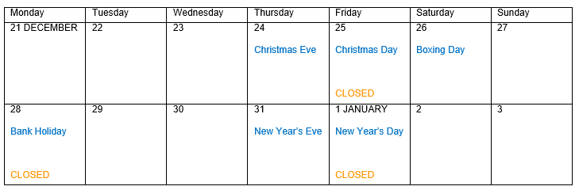

2015
02/12
December
With huge thanks to the IC-ENC Technical Team and the Novo systems support team, we are happy to announce that the migration to the cloud environment has been a success, and we have now been working on our new operating systems for a month. The next stage is to enable IC-ENC Australia to gain access to the IC-ENC cloud environment, allowing the two offices to operate more efficiently with one another. Both IC-ENC Latin America and IC-ENC North America will follow in 2016.
This month, we had inbound visits from Egypt and Malta. It was a great opportunity to spend some time with both delegations discussing IC-ENC's ENC production and validation services.
Last week, we attended a talk held by Rachel Medley from the National Oceanic and Atmospheric Administration (NOAA). This was a great opportunity to learn more about the different divisions within NOAA, and a result we are really excited for the development and launch of IC-ENC North America, and our working partnership with NOAA to go forward in 2016.
We currently have two delegates from the Diretoria de Hidrografia e Navegação (DHN) in Brazil at IC-ENC HQ for a three week secondment. The aim of this secondment is to provide IC-ENC Validation training for the two delegates, who will be working in the IC-ENC Latin America office once it is launched in early 2016. The two delegates will be spending their time at IC-ENC HQ learning about all of IC- ENC's operating processes, particularly the ENC Validation processes which they will be performing back in the IC-ENC Latin America office.
We continue to experience a high validation workload, with average weekly exchange sets of 160 ENCs.
IC-ENC will remain open throughout the Christmas period, and we will respond to email queries as quickly as possible during this time. The calendar below shows which days the IC-ENC UK office will be open:

×

Email a link